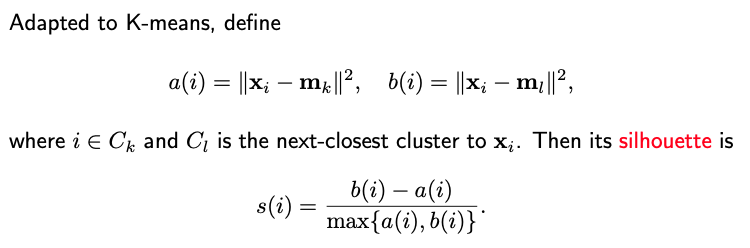

6.3. Choice of K
6.3.1. Introduction
In supervised learning, the goal is clear: make accurate predictions for the target variable, Y. But unsupervised learning, such as clustering, doesn’t have a Y variable, making it challenging to evaluate its accuracy or effectiveness. This lack of a clear target introduces complexities when determining the optimal number of clusters, K.
In supervised scenarios like regression, the go-to method for tuning parameters is cross-validation. However, applying cross-validation directly to clustering isn’t straightforward. Despite these challenges, several techniques aid in determining the optimal K. Key among them are gap statistics, silhouette statistics, and prediction strength.
6.3.2. Gap Statistics
When examining clustering effectiveness, many measures gauge the compactness or tightness of clusters. A common metric is the within cluster sum of squares, which, when based on the L2 distance, matches the objective function of K-means.
It’s natural to aim for a smaller SS, indicating tighter clusters. However, as the number of clusters (K) increases, the SS inherently decreases for the same dataset. Thus, relying solely on SS can be misleading when selecting the optimal K.
To determine the optimal K, researchers often use the “elbow method.” Here, the sum of squares is plotted against K. If a curve is observed with a distinct “elbow” point, that point often signifies the best K value. However, in real-world data, identifying the precise elbow can be challenging due to noise and complexity.
The gap statistic (Tibshirani, Walther and Hastie, 2001) compares the clustering of actual data against a random clustering from a reference distribution. It’s calculated by measuring the SS from the observed data against the expected log sum of squares from a reference set. This reference set is derived from a distribution that has no intrinsic clustering, meaning an ideal number of clusters would be one.
To estimate the gap statistic, multiple samples from the reference distribution are taken, and the average over these samples provides an expectation. As K grows, even though the sum of squares shrinks, the difference (or gap) may not always decrease. A high gap statistic suggests that the SS for the observed data at a particular K is notably smaller than its reference counterpart, indicating good clustering.
Generating Data from the Reference Distribution
There are two proposed methods:
- Uniform Sampling:
Here, the reference data is uniformly sampled over the range of the observed data. This method may not be effective if the observed data has distinct shapes.
- Principal Component Based Sampling:
This method samples over the range of the principal components of the observed data, ensuring better alignment with the data’s structure.
Determining Optimal K with Gap Statistic
Plot the gap statistic values for different K.
The optimal K is determined either by identifying the highest gap statistic or, in a sequential approach, by selecting the first K where its gap statistic exceeds that of K+1.
Since the gap statistic is based on random sampling, there’s inherent variability. One-standard-error principle is used to account for this uncertainty. We compare the gap statistic at K to the lower bound of the gap statistic for K+1 (subtracting one standard error). If the former is greater, we consider that K as optimal.
where \(s_K = \text{sd}_0(\log SS(K)) \sqrt{1+1/B}\).
6.3.3. Silhouette Statistics
The Silhouette statistic (Rousseeuw, 1987) of the i-th obs measures how well it fits in its own cluster versus how well it fits in its next closest cluster.
{kind=link}
For well-clustered observations where \(a_i\) is significantly smaller than \(b_i\), \(s_i\) approaches 1. However, if the i-th observation lies on the borderline of two clusters, both \(a_i\) and \(b_i\), will be similar, rendering \(s_i\) close to 0. In the K-means scenario, \(b_i\) should be greater than \(a_i\); otherwise, the observation would belong to a different cluster. However, using other clustering algorithms, \(b_i\) could be smaller than \(a_i\), potentially resulting in a negative silhouette statistic. Even then, the value of \(s_i\) would remain above -1. Extremely negative silhouette statistics indicate poor clustering for the i-th observation.
To evaluate the overall quality of the clustering, we seek a large silhouette statistic across all observations. The Silhouette Coefficient (SC), sometimes referred to as the silhouette width, is defined as the average silhouette statistic over all samples.
There are established benchmarks for the silhouette coefficient to gauge the quality of the identified clustering. For example, a rule of thumb from Anja et al. “Clustering in an Object-Oriented Environment ”:
SC > 70%: A strong structure has been found.
SC > 50%: A reasonable structure has been found.
SC > 26% : The structure is weak and could be artificial, try additional methods.
SC < 26%: No substantial structure has been found.
We can also plot the silhouette coefficient against varying K values. The optimal K can either be the one yielding the largest silhouette coefficient or a K surpassing a specific threshold.
For a comprehensive look into our methodology, including the specific R commands and outputs, please refer to our code page.
6.3.4. Prediction Strength
The Prediction Strength method is another strategy for choosing the optimal number of clusters K. Here’s how it works:
- Step 0:
Split the dataset into two subsets: A (the training set) and B (the test set).
- Step 1:
Assume there are m observations in test set B. Cluster these m samples into K clusters using your chosen clustering algorithm. Label these clusters as \(C_1, \dots, C_K\). Each cluster \(C_j\) contains \(m_j\) observations. The sum of the sizes of these clusters \(m_1, \dots, m_K\) is equal to m. This step determines the true clustering structure for the test data.
- Step 2:
Cluster the training data A into K clusters. Use the resultant clustering rule to allocate the m observations from test set B into these K clusters. This essentially means predicting the cluster membership for the test set based on the cluster centers determined from the training data. Denote these predicted clusters as \(C'_1, \dots, C'_K\).
A direct comparison between the true clusters (\(C_j\)) and predicted clusters (\(C'_j\)) is challenging due to the relabeling problem. The identity of clusters may change between datasets, so the clusters from Step 1 and Step 2 might not correspond directly.
A technique to address this is to assess prediction error using the association or co-membership matrix. This matrix for m observations is m-by-m. An entry in this matrix is “1” if observations ‘i’ and ‘j’ belong to the same cluster, otherwise “0”. For both steps, an association matrix can be generated.
Defining Prediction Strength
For each cluster \(C_j\) obtained in Step 1, examine every pair of observations within that cluster. Check if those pairs remain in the same cluster in Step 2.
Calculate the average accuracy for each cluster, indicating how often pairs of observations remain together.
The “prediction strength” (Tibshirani and Walther 2005) for K clusters is the worst (smallest) accuracy among these clusters.
Choosing the worst accuracy avoids potential biases. If one were to take the average accuracy, the method might be skewed by predominantly classifying many observations into one cluster, artificially inflating the average.